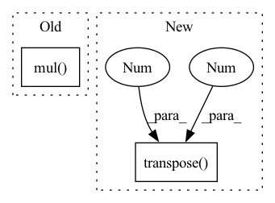

Pattern ID :21211
Before Change
else:
temp = F.softmax(temp, 0) // N x 1
A = torch.cat((A, temp), 1) // N x C
B = torch.cat((B, torch.sum(torch.mul( temp, V) , 0).view(1, -1)), 0) // C x V -> 1 x C x V
B = B.view(1, B.shape[0], B.shape[1]) // 1 x C x V
C = self.fcc(B) // 1 x C x 1
C = C.view(1, -1)After Change
q_max = self.q(m_feats) // compute queries of critical instances, q_max in shape C x Q
A = torch.mm(Q, q_max.transpose(0, 1)) // compute inner product of Q to each entry of q_max, A in shape N x C, each column contains unnormalized attention scores
A = F.softmax( A / torch.sqrt(torch.tensor(Q.shape[1], dtype=torch.float32, device=device)), 0) // normalize attention scores, A in shape N x C,
B = torch.mm(A.transpose(0 , 1 ) , V) // compute bag representation, B in shape C x V
// for i in range(c.shape[1]):In pattern: SUPERPATTERN
Frequency: 3
Non-data size: 2
Instances Fragment ID: 67856639
Project Name: binli123/dsmil-wsi
Commit Name: 37d945844a0af37d411b5f1d3fca75a72b4aa979
Time: 2021-04-21
Author: bli346@wisc.edu
File Name: dsmil.py
M Class Name: BClassifier
N Class Name: BClassifier
M Method Name: forward(3)
N Method Name: forward(3)
M Parent Class: nn.Module
N Parent Class: nn.Module
M File Name: dsmil.py
N File Name: dsmil.py
M Start Line: 42
M End Line: 56
N Start Line: 42
N End Line: 51
Before Change
define read operator
attrs = self.relation_Matrix
attentions = nn.functional.softmax(
self.gamma * torch.mul( user_memory, attrs) .sum(-1).float(), -1
) // [B R]
u_m = torch.mul(user_memory, attentions.unsqueeze(-1)).sum(1) // [B H]
return u_mAfter Change
define read operator
attrs = self.relation_Matrix
attentions = nn.functional.softmax(
self.gamma * torch.matmul(seq_output, attrs.transpose(0 , 1 ) ).float(), -1
) // [B R]
u_m = torch.mul(user_memory, attentions.unsqueeze(-1)).sum(1) // [B K]
return u_m Fragment ID: 67856638
Project Name: rucaibox/recbole
Commit Name: c0b47036457c3397054adbfe8af7eebbab8a42d8
Time: 2023-02-13
Author: 18735382001@163.com
File Name: recbole/model/sequential_recommender/ksr.py
M Class Name: KSR
N Class Name: KSR
M Method Name: memory_read(3)
N Method Name: memory_read(2)
M Parent Class: SequentialRecommender
N Parent Class: SequentialRecommender
M File Name: recbole/model/sequential_recommender/ksr.py
N File Name: recbole/model/sequential_recommender/ksr.py
M Start Line: 142
M End Line: 144
N Start Line: 141
N End Line: 145
Before Change
target_entropy_weight = entropy(g_t_temp_softmax).detach()
target_entropy_weight = 1 + torch.exp(-target_entropy_weight)
target_entropy_weight = train_bs * target_entropy_weight / torch.sum(target_entropy_weight)
c_matrix = g_t_temp_softmax.mul( target_entropy_weight.view(-1,1)) .transpose(1,0).mm(g_t_temp_softmax)
c_matrix = c_matrix / torch.sum(c_matrix, dim=1)
mcc_loss = (torch.sum(c_matrix) - torch.trace(c_matrix)) / class_num
return mcc_lossAfter Change
entropy_weight = entropy(predictions).detach()
entropy_weight = 1 + torch.exp(-entropy_weight)
entropy_weight = (batch_size * entropy_weight / torch.sum(entropy_weight)).unsqueeze(dim=1) // batch_size x 1
class_confusion_matrix = torch.mm((predictions * entropy_weight).transpose(1 , 0 ) , predictions)
class_confusion_matrix = class_confusion_matrix / torch.sum(class_confusion_matrix, dim=1)
mcc_loss = (torch.sum(class_confusion_matrix) - torch.trace(class_confusion_matrix)) / num_classes
return mcc_loss Fragment ID: 67856643
Project Name: thuml/transfer-learning-library
Commit Name: 7f63cd30ea0e7cf8961db90d2af8630e2429b434
Time: 2020-08-28
Author: 13126830206@163.com
File Name: dalib/adaptation/mcc.py
M Class Name: MinimumClassConfusionLoss
N Class Name: MinimumClassConfusionLoss
M Method Name: forward(2)
N Method Name: forward(2)
M Parent Class: nn.Module
N Parent Class: nn.Module
M File Name: dalib/adaptation/mcc.py
N File Name: dalib/adaptation/mcc.py
M Start Line: 17
M End Line: 23
N Start Line: 41
N End Line: 46